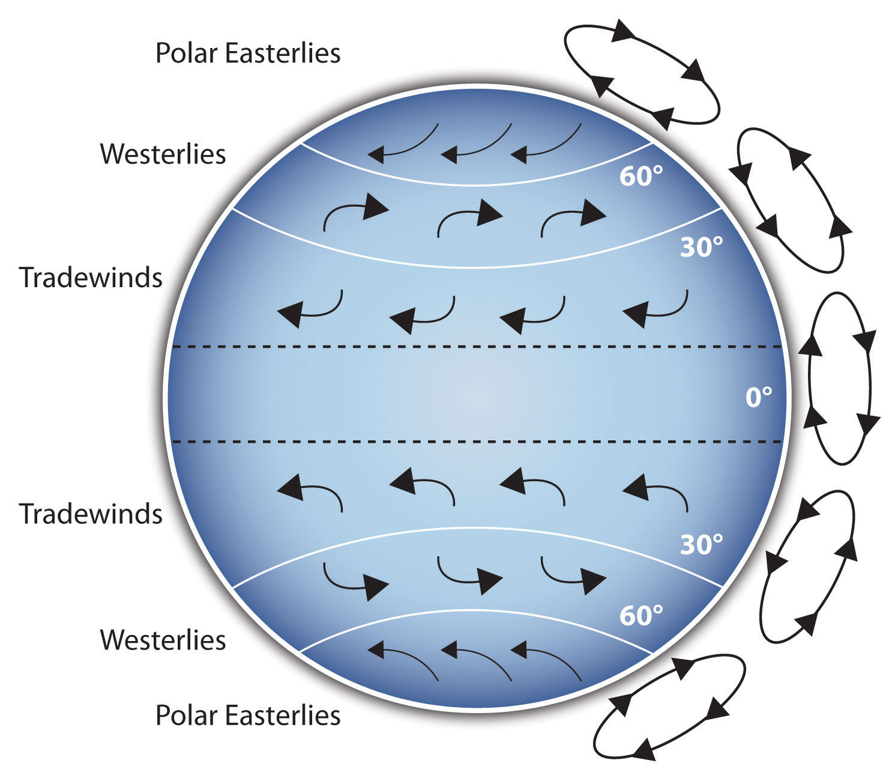
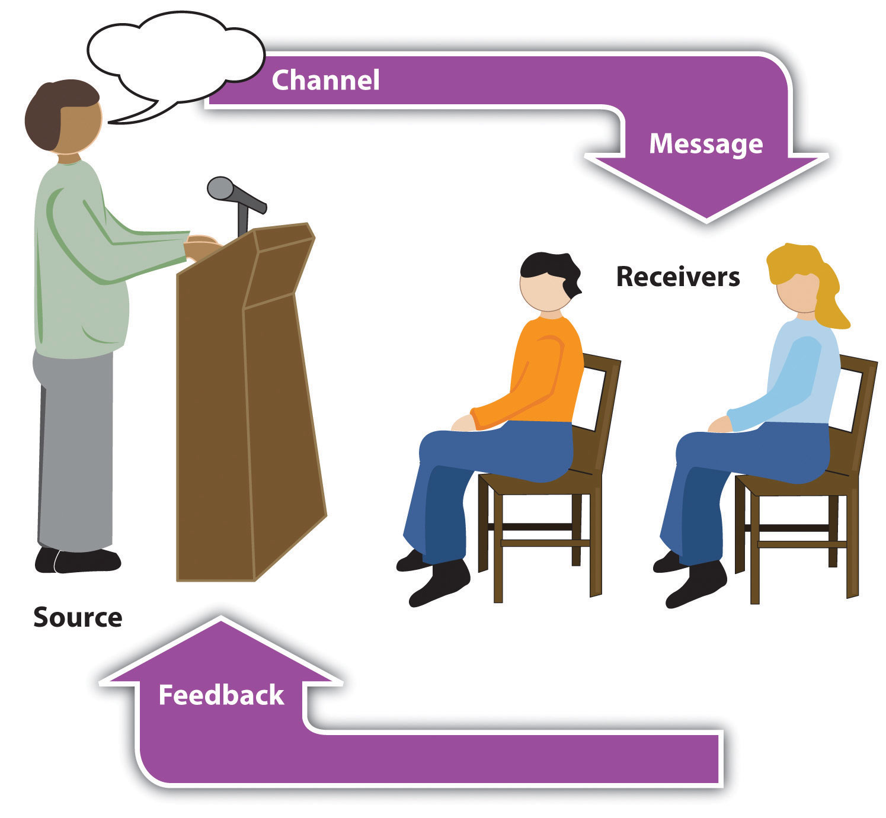
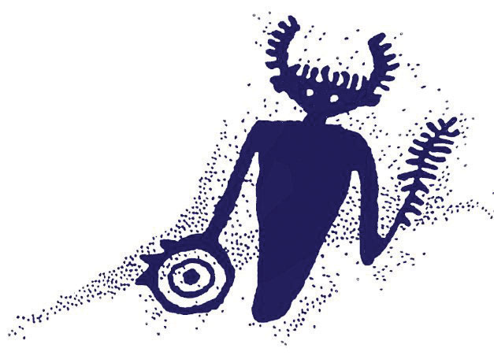
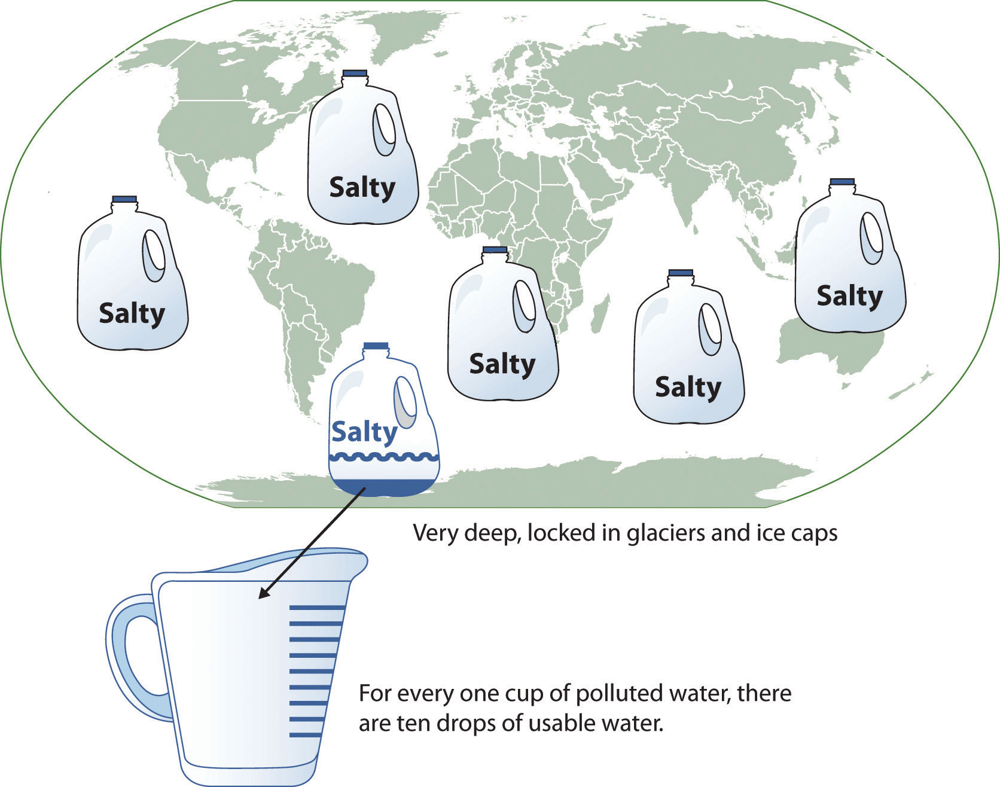

Why should you use presentation aids? If you have prepared and rehearsed your speech adequately, shouldn’t a good speech with a good delivery be enough to stand on its own? While it is true that impressive presentation aids will not rescue a poor speech, it is also important to recognize that a good speech can often be made even better by the strategic use of presentation aids.
Presentation aids can fulfill several functions: they can serve to improve your audience’s understanding of the information you are conveying, enhance audience memory and retention of the message, add variety and interest to your speech, and enhance your credibility as a speaker. Let’s examine each of these functions.
Human communication is a complex process that often leads to misunderstandings. If you are like most people, you can easily remember incidents when you misunderstood a message or when someone else misunderstood what you said to them. Misunderstandings happen in public speaking just as they do in everyday conversations.
One reason for misunderstandings is the fact that perception and interpretation are highly complex individual processes. Most of us have seen the image in which, depending on your perception, you see either the outline of a vase or the facial profiles of two people facing each other. This shows how interpretations can differ, and it means that your presentations must be based on careful thought and preparation to maximize the likelihood that your listeners will understand your presentations as you intend them to.
As a speaker, one of your basic goals is to help your audience understand your message. To reduce misunderstanding, presentation aids can be used to clarify or to emphasize.
Clarification is important in a speech because if some of the information you convey is unclear, your listeners will come away puzzled or possibly even misled. Presentation aids can help clarifyTo make clear so that the audience understands your meanings the way you intend. a message if the information is complex or if the point being made is a visual one.
If your speech is about the impact of the Coriolis effect on tropical storms, for instance, you will have great difficulty clarifying it without a diagram because the process is a complex one. The diagram in Figure 15.1 "Coriolis Effect" would be effective because it shows the audience the interaction between equatorial wind patterns and wind patterns moving in other directions. The diagram allows the audience to process the information in two ways: through your verbal explanation and through the visual elements of the diagram.
Figure 15.2 "Model of Communication" is another example of a diagram that maps out the process of human communication. In this image you clearly have a speaker and an audience (albeit slightly abstract), with the labels of source, channel, message, receivers, and feedback to illustrate the basic linear model of human communication.
Figure 15.1 Coriolis Effect
Figure 15.2 Model of Communication
Figure 15.3 Petroglyph
Another aspect of clarifying occurs when a speaker wants to visually help audience members understand a visual concept. For example, if a speaker is talking about the importance of petroglyphs in Native American culture, just describing the petroglyphs won’t completely help your audience to visualize what they look like. Instead, showing an example of a petroglyph, as in Figure 15.3 "Petroglyph", can more easily help your audience form a clear mental image of your intended meaning.
When you use a presentational aid for emphasisTo impress the importance or to repeat the verbal message in visual form., you impress your listeners with the importance of an idea. In a speech on water conservation, you might try to show the environmental proportions of the resource. When you use a conceptual drawing like the one in Figure 15.4 "Planetary Water Supply", you show that if the world water supply were equal to ten gallons, only ten drops would be available and potable for human or household consumption. This drawing is effective because it emphasizes the scarcity of useful water and thus draws attention to this important information in your speech.
Figure 15.4 Planetary Water Supply
Figure 15.5 Chinese Lettering Amplified
Source: Image courtesy of Wikimedia, http://commons.wikimedia.org/wiki/File:Acupuncture_chart_300px.jpg.
Another way of emphasizing that can be done visually is to zoom in on a specific aspect of interest within your speech. In Figure 15.5 "Chinese Lettering Amplified", we see a visual aid used in a speech on the importance of various parts of Chinese characters. On the left side of the visual aid, we see how the characters all fit together, with an emphasized version of a single character on the right.
The second function that presentation aids can serve is to increase the audience’s chances of remembering your speech. A 1996 article by the US Department of Labor summarized research on how people learn and remember. The authors found that “83% of human learning occurs visually, and the remaining 17% through the other senses—11% through hearing, 3.5% through smell, 1% through taste, and 1.5% through touch.”United States Department of Labor. (1996). Presenting effective presentations with visual aids. Retrieved from http://www.osha.gov Most of how people learn is through seeing things, so the visual component of learning is very important. The article goes on to note that information stored in long-term memory is also affected by how we originally learn the material. In a study of memory, learners were asked to recall information after a three day period. The researchers found that they retained 10 percent of what they heard from an oral presentation, 35 percent from a visual presentation, and 65 percent from a visual and oral presentation.Lockard, J., & Sidowski, J. R. (1961). Learning in fourth and sixth graders as a function of sensory mode of stimulus presentation and overt or covert practice. Journal of Educational Psychology, 52(5), 262–265. doi: 10.1037/h0043483 It’s amazing to see how the combined effect of both the visual and oral components can contribute to long-term memory.
For this reason, exposure to a visual image can serve as a memory aid to your listeners. When your graphic images deliver information effectively and when your listeners understand them clearly, audience members are likely to remember your message long after your speech is over.
Moreover, people often are able to remember information that is presented in sequential steps more easily than if that information is presented in an unorganized pattern. When you use a presentation aid to display the organization of your speech, you will help your listeners to observe, follow, and remember the sequence of information you conveyed to them. This is why some instructors display a lecture outline for their students to follow during class.
An added plus of using presentation aids is that they can boost your memory while you are speaking. Using your presentation aids while you rehearse your speech will familiarize you with the association between a given place in your speech and the presentation aid that accompanies that material. For example, if you are giving an informative speech about diamonds, you might plan to display a sequence of slides illustrating the most popular diamond shapes: brilliant, marquise, emerald, and so on. As you finish describing one shape and advance to the next slide, seeing the next diamond shape will help you remember the information about it that you are going to deliver.
A third function of presentation aids is simply to make your speech more interesting. While it is true that a good speech and a well-rehearsed delivery will already include variety in several aspects of the presentation, in many cases, a speech can be made even more interesting by the use of well-chosen presentation aids.
For example, you may have prepared a very good speech to inform a group of gardeners about several new varieties of roses suitable for growing in your local area. Although your listeners will undoubtedly understand and remember your message very well without any presentation aids, wouldn’t your speech have greater impact if you accompanied your remarks with a picture of each rose? You can imagine that your audience would be even more enthralled if you had the ability to display an actual flower of each variety in a bud vase.
Similarly, if you were speaking to a group of gourmet cooks about Indian spices, you might want to provide tiny samples of spices that they could smell and taste during your speech. Taste researcher Linda Bartoshuk has given presentations in which audience members receive small pieces of fruit and are asked to taste them at certain points during the speech.Association for Psychological Science. (2011, May 28). Miracle fruit and flavor: An experiment performed at APS 2010 [Video file]. Retrieved from http://www.psychologicalscience.org/index.php/publications/observer/obsonline/miracle-fruit-and-flavor-an-experiment-performed-at-aps-2010.html
Presentation aids alone will not be enough to create a professional image. As we mentioned earlier, impressive presentation aids will not rescue a poor speech. However, even if you give a good speech, you run the risk of appearing unprofessional if your presentation aids are poorly executed. This means that in addition to containing important information, your presentation aids must be clear, clean, uncluttered, organized, and large enough for the audience to see and interpret correctly. Misspellings and poorly designed presentation aids can damage your credibility as a speaker. Conversely, a high quality presentation will contribute to your professional image. In addition, make sure that you give proper credit to the source of any presentation aids that you take from other sources. Using a statistical chart or a map without proper credit will detract from your credibility, just as using a quotation in your speech without credit would.
If you focus your efforts on producing presentation aids that contribute effectively to your meaning, that look professional, and that are handled well, your audience will most likely appreciate your efforts and pay close attention to your message. That attention will help them learn or understand your topic in a new way and will thus help the audience see you as a knowledgeable, competent, credible speaker.